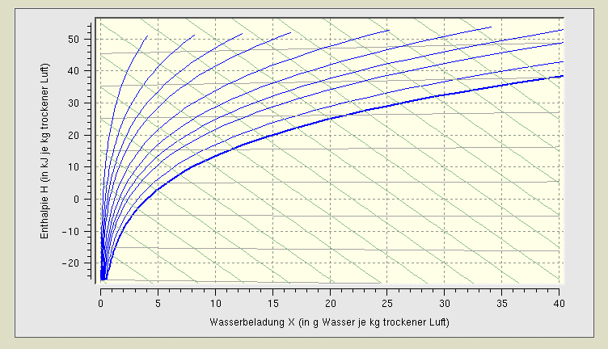
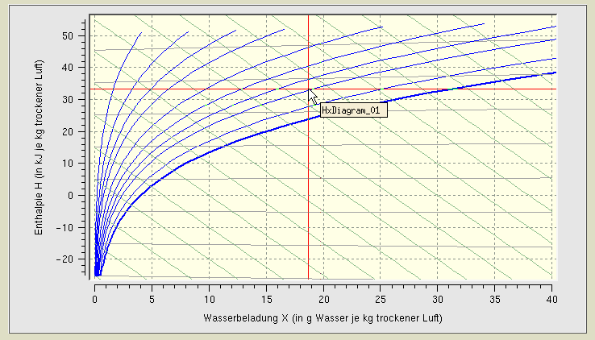
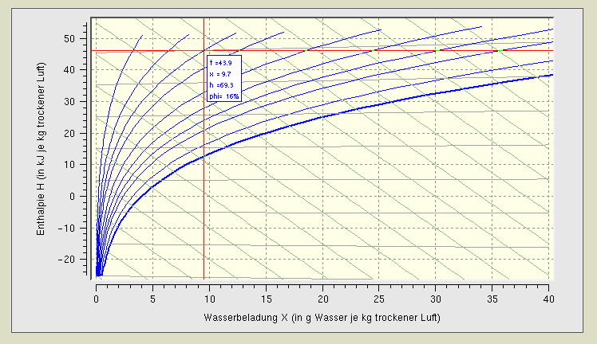
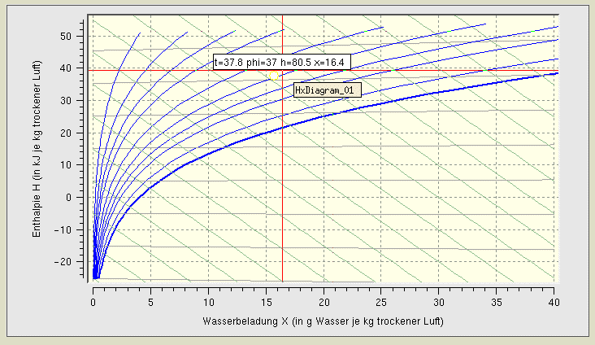

| HxDiagram |
The HxDiagram class is an automationX visualisation class.
For detail information please contact automationX.
Features | Installation | User Interface
The HxDiagram class is comprised of the following
components (files):
| Class Component | Description | File Name(s) |
| Class File | Includes the process picture representation and any popup menus. | HxDiagram.symbol
|
| HTML-Document | HTML document for Online Help. | HxDiagram.htm |
Installation: The
above listed files must be copied into a common sub-directory within the
project's "classlib" directory. The name of the common directory can be
chosen freely.
Features | Installation | User Interface
The graphical representation of the HxDiagram is a function graph, showing the enthalpy H at different water chargings X.

Figure 1: Graphical Representation
of the Hx-Diagram
When you are scrolling over the diagram with activated right mouse button, red help lines will appear.

Figure 2: Help lines, appearing
when the right mouse button is activated
When you are scrolling over the diagram with activated left mouse button a rectangle with parameter information will appear additionaly.

Figure 3: Function parameters
when clicking with the left mouse button

Figure 4: Function parameters,
shown after clicking with the middle mousebutton
Features | Installation | User Interface